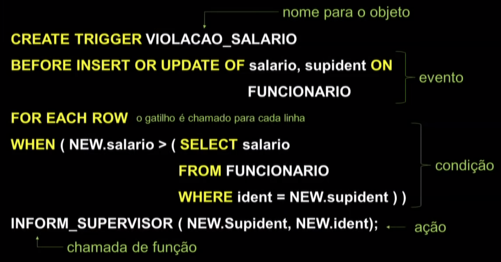

Disciplinas
-
BANCO DE DADOS-T01-2024-1 Concluído
Materiais
Vídeo 3 - Bancos de Dados - Aula 16 - Linguagem de consulta – SQL Parte IV. sendProfessor ministrante: Sarajane Marques Peres.
Conteúdo
Linguagem de consulta – SQL.
SQL.
Esquema para o modelo Relacional do contexto didático: EMPRESA.
FUNCIONARIO (ident, nome, sobrenome, endereco, dtnasc, salario, sexo, supident, dnumero)
DEPENDENTE(fident, nome, dt_nasc, sexo, relacionamento)
DEPARTAMENTO(numero, nome, gident, dtinicio)
LOCALIZACOES(dnumero, localizacao)
PROJETO(numero, nome, localizacao, dnumero)
TRABALHA_EM(pnumero, fident, horas)
Algumas simplificações nos nomes de variáveis foram realizadas para facilitar o uso delas nas consultas. A chave primária, em cada relação, está sublinhada.
SQL-Structured Query Language:- Linguagem de banco de dados com recursos para definição de dados, consulta aos dados e atualização de dados.
- Permite especificar restrições que devem ser impostas aos dados possibilitando a implementação da integridade e segurança da informação armazenada.
SQL é uma linguagem padrão para SGBDs comerciais. Há um padrão, estabelecido pelo American National Standards Institute (ANSI) e pela International Standards Organization (ISO).
- Sugestões de consulta para implementações comerciais:
- https://www.postgresql.org/docs/9.0/static/sql.html
- https://www.postgresql.org/docs/9.0/static/bookindex.html
- http://dev.mysql.com/doc/refman/5.7/en/sql-syntax.html
- http://dev.mysql.com/doc/refman/5.7/en/literals.html
Recursos avançados de SQL.
- Asserções.
- Regras ativas(gatilhos).
- Visões.
Cada SGBD disponibiliza formas diferentes de implementar restrições usando SQL.
- Para implementação de restrições que não são possíveis considerando apenas o modelo de dados, há algumas opções:
- usar recursos da linguagem de programação escolhida para implementar a aplicação que acessará o banco de dados, ou de outros aplicativos de construção de sistemas;
- usar a linguagem de programação de propósito geral que está disponível no SGBD;
- usar recursos avançados de SQL;
- combinar os recursos das opções supracitadas.
- Especificações em SQL que permitem implementar uma regra via uma declaração em DDL.
Envolve a especificação de regras do tipo CHECK que podem atuar em várias relações.
Modelo:
CREATE ASSERTION NOME_RESTRICAO
CHECK (NOT EXISTS (...));
Se o NOT EXISTS é FALSO, então a restrição da asserção foi violada !!! O banco de dados estaria em um estado inconsistente em relação às restrições do mundo modelado.
* Exemplo:Restrição: o salário de um funcionário não pode ser maior do que o salário do gerente do departamento para o qual o funcionário trabalha.
CREATE ASSERTION RESTRICAO_SALARIO
CHECK (NOT EXISTS (SELECT *
FROM FUNCIONARIO AS F,
FUNCIONARIO AS G,
DEPARTAMENTO AS D
WHERE F.dnumero = D.numero
AND D.Gident = G.ident
AND F.salario > G.salario
)
);
Regras ativas (gatilhos):
- Especificações em SQL que permitem implementar ações que são executadas quando determinados eventos ocorrem e quando determinadas condições são satisfeitas.
Modelo Evento-Condição-Ação
Evento:- Geralmente operações de alteração aplicadas ao banco de dados (insert, update, delete).
BEFORE - significa que o gatilho deverá ser executado antes do evento ter efeito no banco de dados.
AFTER - significa que o gatilho deverá ser executado depois do evento ter efeito no banco de dados.
Condição:
- Determina se a regra especificada na ação deveria ser executada a partir da verificação de uma condição. Se nenhuma condição é especificada, a ação será executada de acordo com a ocorrência do evento.
Ação:
- A ação é uma sequência de declarações em SQL, transações de banco de dados ou chamadas a funções implementadas no SGBD ou fora dele.
Gatilho: Sempre que o salário de um funcionário é maior do que o salário de seu supervisor direto, o supervisor precisa ser avisado.
CREATE TRIGGER VIOLACAO_SALARIO
BEFORE INSERT OR UPDATE OF salario, supident ON
FUNCIONARIO
FOR EACH ROW
WHEN (NEW.salario > (SELECT salario
FROM FUNCIONARIO
WHERE ident = NEW.supident))
INFORM_SUPERVISOR (NEW.Supident, NEW.ident);

Visões (ou views):
- Uma tabela única (geralmente virtual e temporária) derivada de outras tabelas.
- Tabela que pode ser consultada de forma livre, mas que está limitada no que diz respeito à ações de inserção de dados.
- Usadas para otimização e para segurança.
CREATE VIEW TRABALHA_EM_1(pnome, fnome, fsobrenome, horas)
AS SELECT PROJETO.nome, FUNCIONARIO.nome, sobrenome, horas
FROM FUNCIONARIO, PROJETO, TRABALHA_EM
WHERE ident = fident AND numero = pnumero;
SELECT fnome, fsobrenome
FROM TRABALHA_EM_1
WHERE Pnome = 'Placa Verde';
DROP VIEW TRABALHA_EM_1;
Os dados nas visões devem estar sempre atualizados de acordo com os dados nas tabelas base.
Os SGBDs precisam ser estudados para verificar como cada um trata dessa questão.
CREATE VIEW DEPT_INFO (Dept_nome, No_of_funcs, Total_sal)
AS SELECT DEPARTAMENTO.nome, COUNT (*), SUM (salario)
FROM DEPARTMENTO, FUNCIONARIO
WHERE numero = Dnumero
GROUP BY DEPARTAMENTO.nome;
Linguagem de consulta - SQL Parte IV.
Estes slides estão baseados na bibliografia: